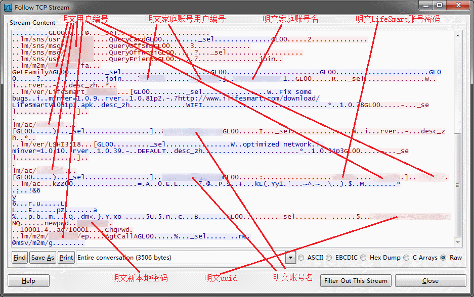

最近正在体验LifeSmart智能家居产品。本文主要记录了对LifeSmart产品网络通讯的嗅探。
在实际拿到LifeSmart产品之前，简单浏览了一下其官网，发现其中一篇文章《让美国噩梦般大规模断网的，居然是国产摄像头！》（文章截图如下）。看完这篇文章，初步感觉LifeSmart的通讯环节安全性还是做得不错的，对LifeSmart有了初步的好感。
前几天拿到了LifeSmart的智慧中心和一个智慧插座，初步试用还算方便，可以通过网络远程控制，可以设置定时开关，在没有外网的情况下只要手机和智慧中心在同一个WiFi下还可以通过本地模式进行控制。其中只有智慧中心需要联网，其他设备比如智慧插座、超级碗、智能门锁等都是和智慧中心之间通过射频进行通讯。所以，在这里只记录对智慧中心的Sniff过程。
回到几天前刚安装好LifeSmart Android APP，看到APP版本为1.0.8p2 [J1,58f03c2f]，智慧中心版本为1.0.37p5。智慧中心详情中显示其是Linux系统、以及其MAC地址，DNS在路由器DHCP的基础上增加了4项（114.114.114.114、208.67.222.222、208.67.222.220、8.8.8.8）。

APP更新显示1.0.8p2已为最新版本，但智慧中心版本可以进行升级，遂升级了智慧中心的版本。重启智慧中心后看到其版本为1.0.39。在此基础上，开始了Sniff的过程。
首先Sniff的是接上智慧中心的网线并通电后的情况，通过Sniff看到智慧中心启动后首先会进行对时，之后会通过TCP连接到121.199.14.200:18894。
通过跟踪TCP流，发现连接中服务器返回的数据里注册APP时的邮箱和用户编号赫然在目（LifeSmart智慧中心同一时间只能有一个Owner，Owner可以添加其他家庭成员）。除此之外，还有一些token、uuid等信息，还能看到智慧中心的版本号。这些信息全都是明文发送和接收的，没有任何加密，似乎和之前其官网blog中描述的不符。
接下来看一下LifeSmart的本地模式，从Sniff的结果中看到APP会通过UDP广播和组播的方式寻找智慧中心。找到后APP通过TCP连接智慧中心的8888端口。通过跟踪TCP连接后发现，本地管理密码也赫然在目没有任何加密。
虽然说没有WiFi密码的情况下无法进行Sniff，但现在不是很复杂的WiFi密码破解并不难，而且即使设置了复杂的密码也难免有WiFi密码共享软件会把密码共享出去。即使自己比较小心，没有安装WiFi密码共享软件，但难免有客人或者父辈的客人在自己不在家的时候来访。即使设置了访客网络，父母很有可能还是会告诉客人主WiFi的密码，而一般很难保证客人手机中没有安装WiFi密码共享软件。而如果使用WPS PIN码，则WiFi更容易被攻破。
然后再来看一下LifeSmart的远程模式，在远程模式中通过LifeSmart账号的主密码修改了一次智慧中心的密码，从Sniff的结果中看到，APP通过TCP连接到了121.199.14.200:19910。通过跟踪TCP流发现在修改智慧中心密码时，APP将LifeSmart主账号密码和智慧中心新密码一起以明文方式发送到了121.199.14.200:19910。之后121.199.14.200:18894会将智慧中心新密码推送到智慧中心上。

本以为通过远程控制方式LifeSmart会按照《让美国噩梦般大规模断网的，居然是国产摄像头！》做好安全防护，毕竟公网流量更容易被监听和劫持，但似乎LifeSmart不管是本地模式还是远程模式丝毫看不到流量数据的加密。而APP中不管是登陆还是其他所有操作，都无需进行手机短信或其他二次验证方式。所以只需要入门级的黑客知识就能很容易入侵智慧中心，从而控制家中所有智能设备。和其官网中的《让美国噩梦般大规模断网的，居然是国产摄像头！》说法大相径庭。
总之，个人认为现阶段购买LifeSmart并通过远程模式控制家中的设备是个很不明智的决定，LifeSmart也需要加强产品的安全性，做到和其说法（《让美国噩梦般大规模断网的，居然是国产摄像头！》）一致，让用户放心。否则LifeSmart的用户数量一旦增多，一定会引起黑客的注意，后果也十分严重。
注：图片中关键信息都已打码，有LifeSmart智慧中心的可自行Sniff就能看到所有信息。